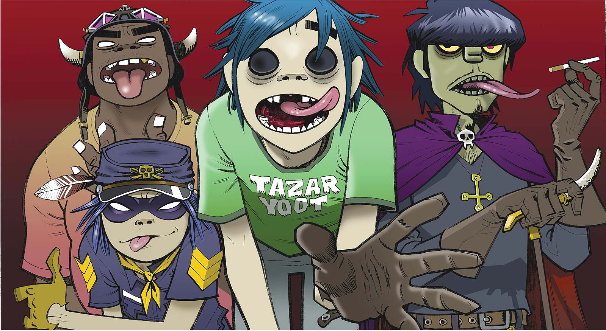
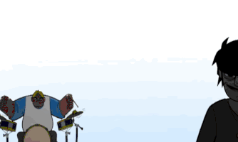
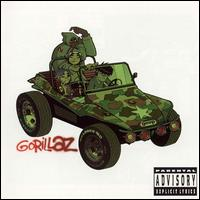

this is the history of the band gorillaz and thier 4 integrants noodle,2-D (stuart),murdock and russel, the content of this page is in the book the rise of the ogre which tells the story of the band.
HISTORY
the history of the band begins with murdoc who was looking to form a band to realize his dream of achieving fame, but he needs to have members and even more important instruments, one day he decides to rob a store of musical instruments, and in his flight he runs over stuart tusspot , who loses an eye and remains in a vegetative state, as punishment for his crime is left in charge of stuart's care, one day murdoc in his boredom decides to play with his car while stuart is with him, but an accident arises and stuart is thrown from the car, as a result of this accident he loses his other eye but wakes up from the coma, from that moment he is nicknamed as 2-D (due to his two accidents).  murdoc realizes his voice and that he has talent, and decides to put the band together with 2-D (voice) and his girlfriend paula Cracker (guitar), russel (drummer) who works with paula in a music store and he as a bass player, after some rehearsals a problem arises with murdoc and paula who made 2-D unfaithful, as a result of this russel hits murdoc and breaks his nose, paula after that they kicked her out of the group and From a FedEx package from Japan a girl arrives with a gift for the guitar but she did not know how to speak English so they nicknamed her noodles because it was the only word she knew how to say in English and she said it when she was hungry, so the road to this band,The switch had been activated,Gorillaz lived!.
PHASE 1(2000-2002)
The band's first release was Tomorrow Comes Today, released in 2002 but it would be until their first single, Clint Eastwood, that the band would be recognized worldwide.  In Clint Eastwood's video, Russell is possessed by an entity, this spirit named Del is his best friend, the New York native drummer who lost all his friends when a gang shot them while driving. To protect him, his family sent him to England, but his spirits decided to stay in the body of russel some time later they managed to get them out, except for Del who had a talent for rap and in the video he is totally demonstrated. Later that month, their first album, Gorillaz, was released, producing four singles: Clint Eastwood, 19-2000, Tomorrow Comes Today, and Rock the House. "19-2000 (Soulchild Remix),Having great popularity, Gorillaz would have its first antagonist named Dr. Wurzel He is best known for the theft of the Murdoc trailer, as seen in video 19-2000. When she stole Murdoc's trailer, I took several photos of her in different places. He also leaked a single from the band that would later be on the G-Sides album. In late 2001, Murdoc and the authorities found the Dr. to return the trailer to him, and after that they took him to court to go to prison. After all this, and a couple of concerts, the band would take a temporary break, concluding the First Phase (Gorillaz).
Gorillaz(disk)
- "Re-Hash" (con Miho Hatori)
- "5/4"
- "Tomorrow Comes Today
- "New Genius (Brother)"
- "Clint Eastwood"
- "Man Research (Clapper)"
- "punk"
- "Sound Check (Gravity)"
- "Double Bass"
- "Rock the House"(con Del tha Funkee Homosapien)
- "19-2000" (con Miho Hatori y Tina Weymouth)
- "Latin Simone (¿Qué Pasa Contigo?)" (con Ibrahim Ferrer)
- "Starshine"
- "Slow Country"
- "M1 A1"
PHASE 2 (2004-2006)
The group broke up for a time: Murdoc went to Mexico and was arrested for passing false checks to prostitutes at a brothel in Tijuana. He enjoyed his short jail term alongside his raven Cortez - whom he met there - and two Mexican gangsters who would later help him escape. In prison he got a tattoo and won the title of "Dr. Niccals ”. 2D returned home and worked in an amusement park that his uncle had, in bumper cars, where he tried to lead a more or less calm life and where he tried to get used to his new popularity among girls.